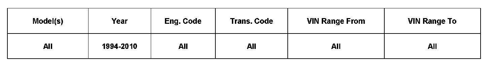

Immobilizer System - Active/DTC's P0513/1177
96 09 03December 2, 2009
2021774

Vehicle Information
Condition
Immobilizer Active Intermittently
Vehicle may not start at times.
Technical Background
Additional electronic key/transponder attached to the same key ring may cause interference problems with the immobilizer system.
The following message appears in the dash insert: Immobilizer active
The following faults may be logged:
address 01: Engine Control Unit: SAE code P0513 incorrect immobilizer key
address 25: Immobilizer: SAE code 1177 key implausible signal
This problem may occur on all vehicles with immobilizer/transponder technology.
Production Solution
Additional electronic keys should not be kept on the vehicle key ring, near the ignition lock, or the transponder of the immobilizer.
Service
Explain to the customer the potential problems when other transponders are attached to the vehicles key ring.
Warranty
Information only.
Required Parts and Tools
No Special Parts required.
No Special tools required.
Additional Information
All part and service references provided in this Technical Bulletin are subject to change and/or removal.
Always check with your Parts Dept. and Repair Manuals for the latest information.